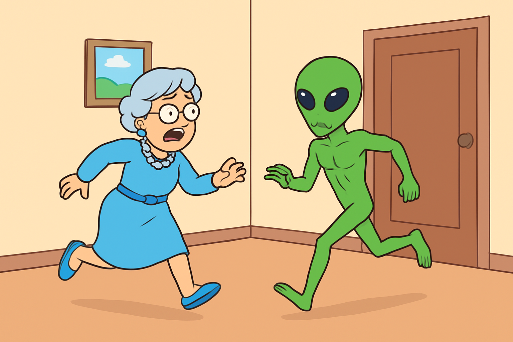
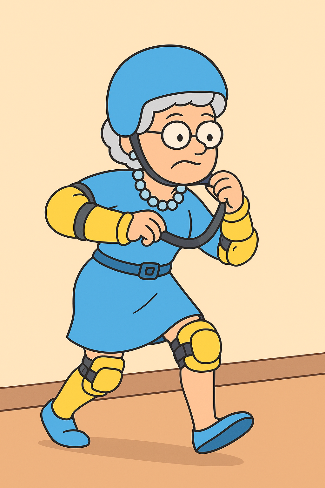

Alien invasion
Aleins på danske plejehjem
Aleins på danske plejehjem
Med aliens, der pludselig dukker op på plejehjem og i haver, spekulerer forskere nu på, hvilke konkrete menneskelige sygdomme de kunne finde mest interessante at studere. Her er nogle specifikke bud:
Se mereChok på Solbakken: Plejehjem Invaderet af Uidentificerede Rumvæsener
SOLBAKKEN – 13. november 2025
Solbakkens plejehjem blev i dag centrum for en usædvanlig og skræmmende begivenhed, da flere uidentificerede flyvende objekter landede på grunden, og væsener fra det ydre rum blev observeret blandt de ældre beboere. Personalet fortæller, at invationen begyndte omkring kl. 10.30, hvor lyse, flimrende lys blev set på himlen.
Kort efter trådte små, grønne humanoide væsener ind i fællesrummene, tilsyneladende nysgerrige, men uden umiddelbart voldeligt adfærd. “Det var surrealistisk. Først troede vi, det var en elaborate prank, men så begyndte de at kommunikere med os på en slags lys- og lydsignal,” fortæller plejepersonalet. Flere beboere har senere beskrevet oplevelsen som “mærkelig, men ikke skræmmende.”
Myndighederne blev hurtigt tilkaldt, og både politi og videnskabelige eksperter arbejder nu på stedet for at forstå de uventede gæster. Der er endnu ingen rapporter om skader, og beboerne siges at være i god behold. Eksperter spekulerer på, at aliens kan være interesseret i jordiske sociale strukturer, og plejehjemmet kan have fanget deres opmærksomhed på grund af dets “rolige og organiserede miljø.” Flere videnskabsmænd opfordrer nu offentligheden til at holde afstand og observere situationen fra sikker afstand, mens kommunikationen med væsenerne forsøges forstået.
Plejehjemsledelsen har udtrykt både bekymring og fascination: “Vi har altid sagt, at vores beboere er verdensmestre i tålmodighed. Måske er de også verdensmestre i intergalaktisk gæstfrihed,” siger lederen med et skævt smil.
Sådan Beskytter Du Dig Mod Uventede Rumvæsener
SOLBAKKEN 10. november 2025
Med den seneste invasion af uidentificerede væsener på Solbakkens plejehjem kan mange ældre borgere føle sig usikre. Eksperter har derfor samlet nogle enkle råd til, hvordan man bedst beskytter sig, hvis man skulle møde aliens.
Hvilke sygdomme vil aliens teste på mennesker?
SOLBAKKEN 4. november 2025
Med aliens, der pludselig dukker op på plejehjem og i haver, spekulerer forskere nu på, hvilke konkrete menneskelige sygdomme de kunne finde mest interessante at studere. Her er nogle specifikke bud:
Eksperternes råd Selvom dette lyder skræmmende, er der ingen rapporter om, at aliens direkte har forårsaget sygdomme. Den bedste strategi er stadig ro, observation og kontakt med myndigheder.